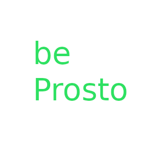

Hi! I'm beProsto! 💚
Thank you so much for checking me out! I hope you'll find some of my projects intresting!
I'm mainly a C/C++ developer. I'm intrested in game engines, embedded systems, VR, and networking. :D
